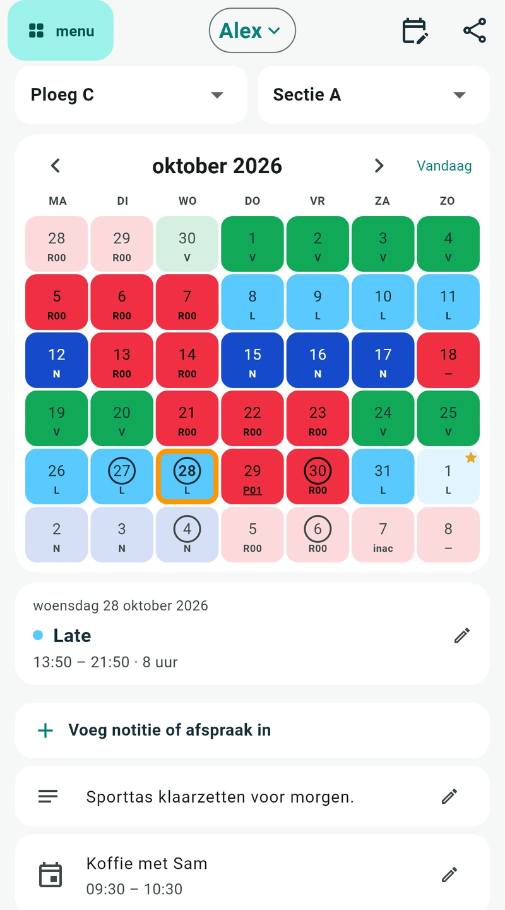
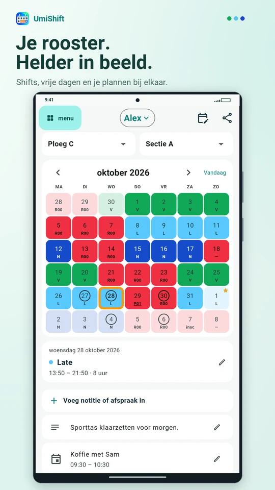
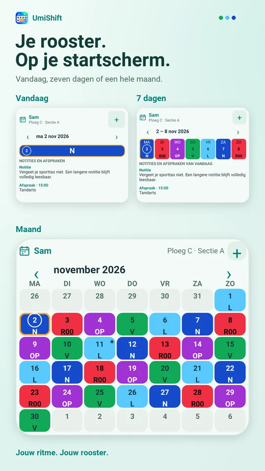
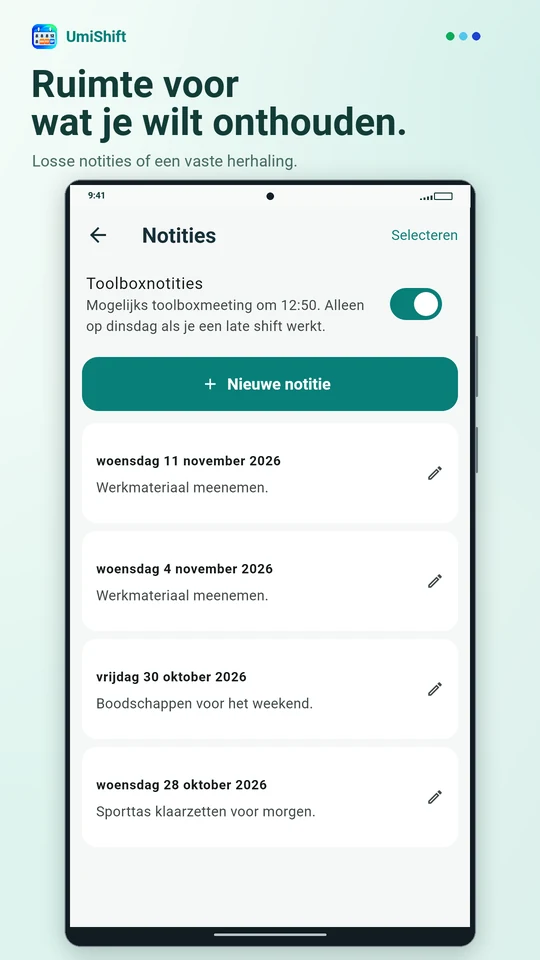
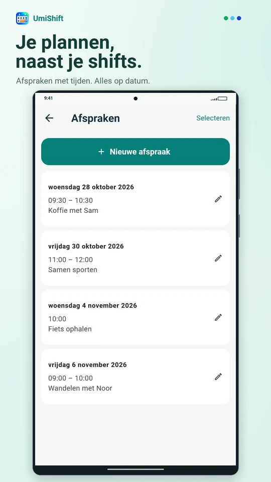
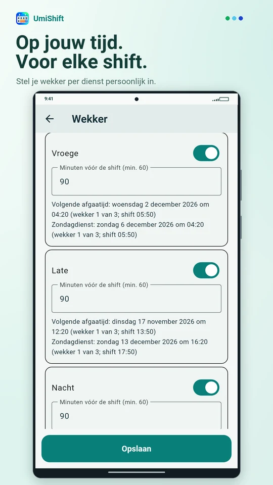
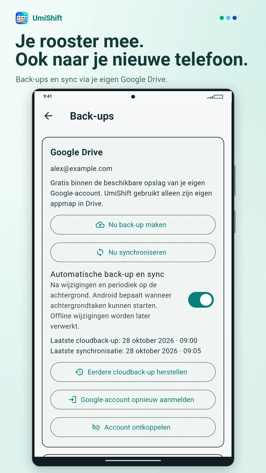
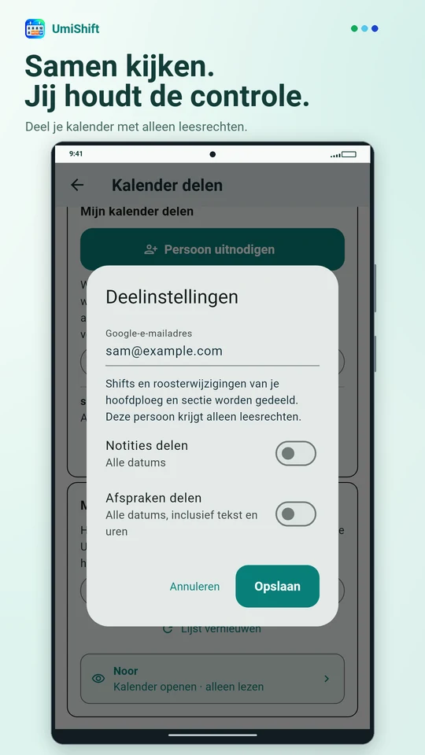
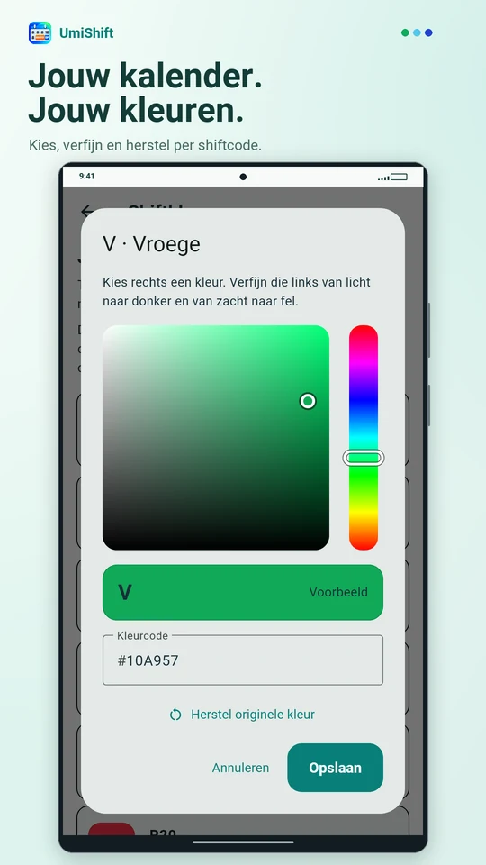
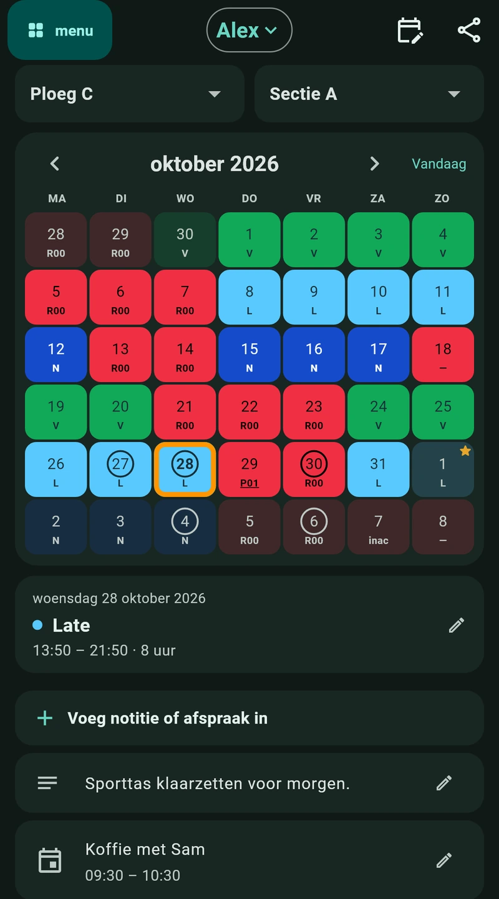

Een rooster dat past
Vol continu of Fixt, met je eigen ploeg en waar nodig een sectie. Stel deeltijddagen in voor een gekozen periode en pas die later eenvoudig aan.
MEER RUST IN JE PLANNING
Vroege, late of nacht? Zie je shifts en vrije dagen in één oogopslag. En geef je plannen de plek die ze verdienen.
Voor Android · Je eigen rooster werkt zonder Google-aanmelding.

GEMAAKT VOOR JOUW DAG
Kies je ploeg, maak je rooster persoonlijk en houd overzicht over werk én vrije tijd.
Vol continu of Fixt, met je eigen ploeg en waar nodig een sectie. Stel deeltijddagen in voor een gekozen periode en pas die later eenvoudig aan.
Kies een kleur per shiftcode. Verfijn de tint en helderheid, of herstel de originele kleur. Je keuze volgt mee naar kalender, widgets en exports.
Pas één dag of meerdere dagen snel aan. Met Daguren kies je zelf de begin- en eindtijd. Elke dag onthoudt zijn eigen tijden.
Voeg notities en afspraken toe, eenmalig of herhaald. Beheer meerdere items tegelijk. De optionele toolboxnotitie volgt je gewerkte late dinsdagen.
Stel meldingen en wekkers in per dienst, ook voor Daguren. Kies herhaling en sluimeren. Controleer met een test of je toestel goed is ingesteld.
Maak een los back-upbestand of koppel je eigen Google Drive voor back-ups en synchronisatie. Geef anderen alleen leesrechten op je kalender.
BEKIJK HET ZELF
Acht beelden van de huidige app. Veeg door de voorbeelden of open een afbeelding om die groter te bekijken.








Echte appschermen met fictieve gegevens, in een illustratief telefoonframe.
JIJ HOUDT DE CONTROLE
Laat een partner, vriend of collega je kalender bekijken. Jij bepaalt wie toegang krijgt en of notities en afspraken meegaan. De ontvanger kan niets aanpassen.
Een jaaroverzicht bevat geen werkuren, notities of afspraken. Eerder opgeslagen kopieën kun je niet terughalen door toegang in te trekken.
Herstel een voltooide Drive-back-up met hetzelfde Google-account, ook als je oude telefoon niet meer werkt.
Liever een bestand? Bewaar je .umishift-back-up buiten je telefoon en importeer die later weer.
Meer over back-ups ↓JOUW GEGEVENS
Je eigen kalender werkt lokaal. De beheerder heeft geen toegang tot je privékalender of privéback-ups. Jij kiest of je Google koppelt en met wie je deelt.
GOED OM TE WETEN
UmiShift is momenteel gratis te gebruiken. Later kunnen bepaalde functies betalend worden via een aankoop in de app. Prijzen en voorwaarden worden vooraf duidelijk meegedeeld. Je betaalt alleen als je zelf een aankoop bevestigt.
Nee voor je eigen rooster, wijzigingen, notities en afspraken. Een Google-account is wel nodig voor Drive-back-ups, synchronisatie en het delen of openen van een gedeelde kalender. Je kunt ook alleen gedeelde kalenders gebruiken, zonder een eigen rooster te kiezen.
Ja. Koppel hetzelfde Google-account en schakel automatische back-up en synchronisatie in, of kies Nu synchroniseren. Offline wijzigingen worden later verwerkt. Dit is geen gegarandeerde onmiddellijke liveverbinding: Android, je netwerk en batterijbeheer bepalen wanneer achtergrondtaken kunnen starten. Meldingen en wekkers kun je per toestel aan- of uitzetten.
Je kunt op een nieuwe telefoon een eerder voltooide cloudback-up herstellen met hetzelfde Google-account. De oude telefoon is niet nodig. Een los back-upbestand werkt ook als je dat buiten de oude telefoon hebt bewaard. Zonder zo'n back-up kunnen verloren lokale gegevens niet worden teruggehaald.
De huidige app is alleen voor Android. Er is nog geen beschikbare iOS-app of automatische iCloud-back-up. Het UmiShift-bestandsformaat is voorbereid op een latere iOS-versie. Een volledig iPhone-systeemback-upbestand kun je niet importeren. Een los .umishift-bestand uit iCloud Drive kun je na downloaden wel op Android herstellen.
Onder Weergave en widgets kies je Shiftkleuren. Tik op een code om de kleur te verfijnen of te herstellen. Kleuren gaan mee in je back-up en synchronisatie. Elke datum met Daguren onthoudt zijn eigen tijden. Een algemene Dag-kleur geldt ook voor bestaande dagen; na herstel van die algemene kleur verschijnen de oorspronkelijke kleuren per datum weer.
Ja, via Notities of Afspraken in het menu. Kies je herhaling, interval en einddatum. Je kunt meerdere items tegelijk verwijderen. De optionele toolboxnotitie verschijnt alleen op een dinsdag waarop je daadwerkelijk een late shift werkt.
Fixt heeft ploegen A, B en C, zonder secties. Je werkt op weekdagen; weekends krijgen inac. Bij het instellen kies je of je op feestdagen werkt. Zonder werk op een feestdag verschijnt F. Een ingestelde deeltijddag krijgt INDT, ook als die samenvalt met een feestdag. Deeltijds werken kun je ook bij vol continu instellen.
Ja. Kies licht, donker of volg de instelling van je telefoon. Je eigen kleurkeuzes blijven behouden.

Android-toestemmingen en batterijbeheer kunnen meldingen en wekkers beïnvloeden. Controle en testen helpt je onder andere het alarmvolume, nauwkeurige alarmen en volledig scherm na te kijken. Test een wekker op je eigen toestel voordat je erop vertrouwt.
Je gedeelde hoofdrooster, gebruikersnaam en roosterwijzigingen. Notities en afspraken staan standaard uit; je kiest dit per ontvanger. Afwezigheidscodes blijven onderdeel van het rooster: controleer ook die vóór het delen. Je Google-e-mailadres is zichtbaar als eigenaar. Je kunt de toegang later intrekken.
Niet via een beheeromgeving. Je gegevens staan op je toestel en eventueel in je eigen Drive. De beheerder ziet wel informatie die je zelf mailt of bewust met hem deelt. Stuur geen wachtwoorden en maak persoonlijke details op screenshots onleesbaar.
WE HELPEN JE GRAAG VERDER
Mail Admin-UmiShift. Beschrijf je probleem en vermeld zo nodig je toestel en appversie.